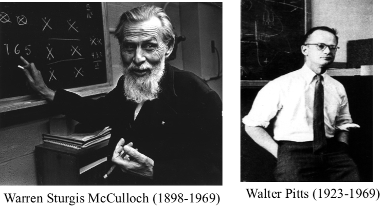
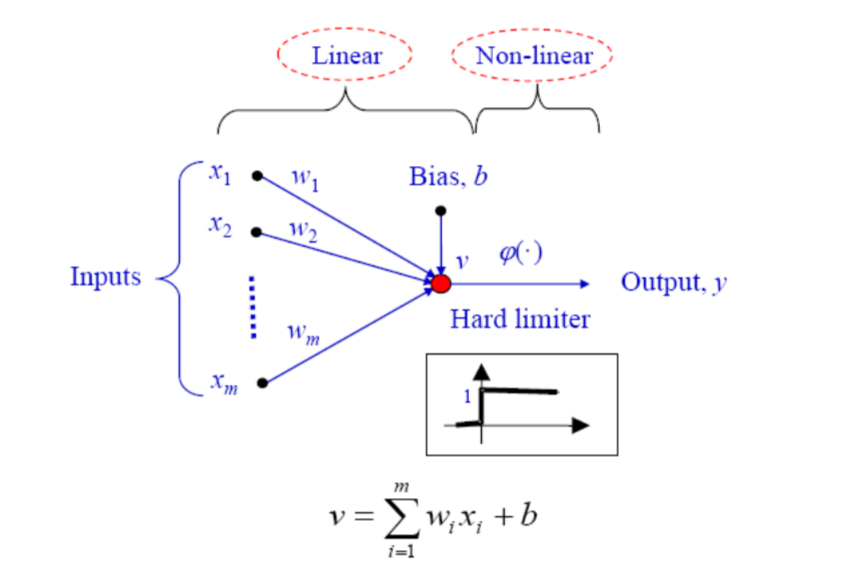
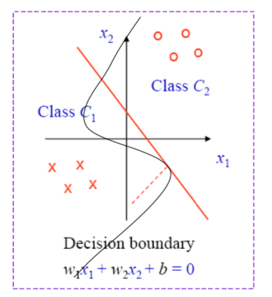
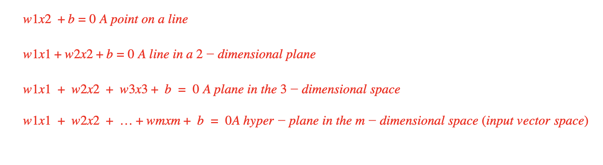

As we know, perceptrons are the fundamental units of Neural Networks(NN). NN are famous for their capability of holding knowledge, in fact, they acquire this knowledge by “Learning”.
In a very high level the learning process can be listed in the following steps:
- Implementing the NN in an environment
- The NN will change its parameters according to the susceptibility towards the environment
- And according to the change, NN will start responding to the environment
Let us look into bit of history 😀 …
The beginning of the artificial neural networks: McCulloch and Pitts, 1943
The perceptron was built around the McCulloch- Pitts model. Who are they?
McCulloch was an American neurophysiologist. He studied philosophy and psychology at Yale, Columbia and even has an MD. He was an intern at a Hospital before returning to academia in 1934. Pitts was a logician. In early 1942, McCulloch invited Pitts, who was homeless, to live with his family. In the evenings McCulloch and Pitts collaborated. This led to their famous paper in 1943.
In 1951, Wiener set up a neuro-group at MIT with Pitts and McCulloch. Pitts wrote a thesis on the properties of neural nets connected in three dimensions. Pitts was described as an eccentric, refusing to allow his name to be made publicly available. He refused all offers of advanced degrees or official positions at MIT as he would have to sign his name. Wiener suddenly turned against McCulloch because his wife Margaret Wiener hated McCulloch. He broke off relations with anyone connected to him including Pitts. This sent Walter Pitts into 'cognitive suicide’. He burnt the manuscript on three-dimensional networks and took little further interest in work ( Sounds like an Indian TV serial plot 🤦)
Simple perceptron
According to the diagram, it can be noticed that the perceptron will be provided with an input set x(n) at some point, and followed by some transformation happened to the input data it will be assigned to a final class ( which is also known as pattern classification)
First, a local field will be created
|
v(n) = ∑w (n)x (n) + b(n) = w (n)x (n) = wT (n)x(n) v(n) = wT (n)x(n) > 0 --> y(n)=1 ----> class 1 Else --> y(n)=0 ----> class 2 |
When the local field is zero ie V(n)=0 then that corresponds to the decision boundary which will classify the data
Furthermore, depending upon the input size, the geometrical shape of the decision boundary will change
 In order for the perceptron to perform the desired task, its weights including the bias weights has to be found correctly
So here comes the question how to find these proper weights ( will be discussed in the next post)